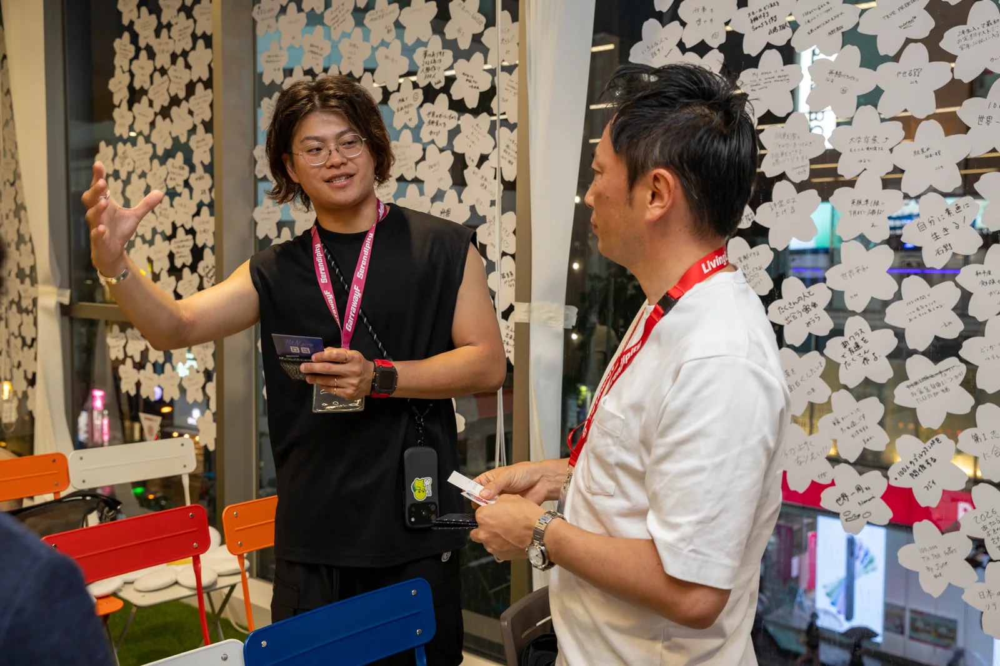
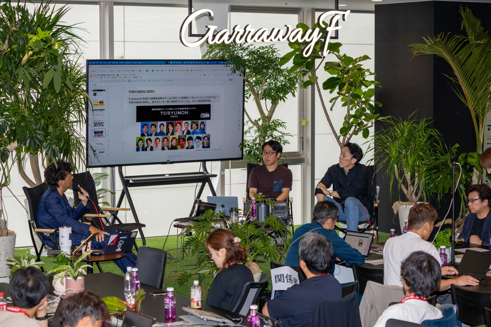
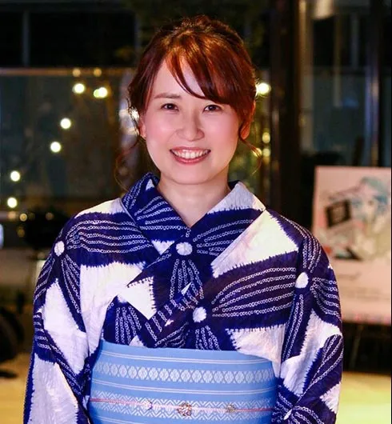

偶然の出会いを、
次の一歩に。
人を見つめ、関係を育み、
挑戦が生まれる現場をつくる。
場づくり・コミュニティ運営から
チーム育成、共創・実証まで。
私たちは、Serendipityです。

Good things
begin with people.
すべては、人からはじまる。
何気ない会話が、誰かの背中を押す。
偶然の出会いが、新しい挑戦になる。
そんな瞬間は、日々の小さな関わりから生まれます。
一人ひとりの想いに耳を傾け、まだ出会っていない人をつなぎ、まずやってみる一歩に寄り添う。
Serendipityは、福岡・Garraway Fの運営を通じて、人を中心にした場と組織をつくる会社です。出会いの可能性がひらく環境を、現場で育てています。
SERENDIPITY / セレンディピティ偶然の出会いや対話から、思いがけない可能性を見つけること。
人を、よく見る。
肩書の向こうにある想いを聴く。
その人の「やってみたい」を見つける。
関係を、育てる。
一度きりの出会いを、対話へ。
対話を、一緒に動ける関係へ。
挑戦の余白を、つくる。
答えを決めすぎず、小さく試す。
偶然を受け止める余白を残す。
The work
behind the place.
人がつながり、動き出す。
そのための、5つの仕事。

01PLACE DESIGN場づくり
人が自然につながり、行動したくなる空間と体験を設計する。入口での迎え方、座る場所、声をかけるきっかけまで考えます。
空間・体験設計 / 来場導線 / 運営設計02COMMUNITY MANAGEMENTコミュニティ運営
来場者との対話から関心や課題を知り、必要な人や機会につなぐ。一人ひとりとの関係を積み重ね、また来たくなるコミュニティを育てます。
受付・対話 / 関係構築 / マッチング / 継続的な関わり03ORGANIZATION & TEAM組織・チームづくり
現場のメンバーが自分で考え、動けるチームへ。役割と判断基準を共有し、育成、引き継ぎ、振り返りまで、働く仕組みを整えます。
コンシェルジュ育成 / 役割設計 / 判断基準 / オペレーション改善04CO-CREATION & EXPERIMENTS共創・実証
企業・行政・地元・スタートアップと、アイデアを現場で試す。参加する人への説明や体験の運営、声の収集を通じて、次の改善につなげます。
関係者の連携 / 実証の現場運営 / 参加者との対話 / 気づきの収集05EVENTS & PROJECTSイベント・プロジェクト
企画から調整、運営設計、当日、振り返りまで。参加した人の間に何を残すか、どんな行動につなげるかを考え、一貫して進めます。
企画 / 関係者調整 / 当日運営 / 振り返りと次のアクションWhere ideas
meet everyday life.
思想を、日々の実践に。
その積み重ねが、私たちの仕事です。

FEATURED PROJECT / 01↗Garraway F
出会いが、挑戦へ変わる現場を。
場の運営、来場者との対話、コンシェルジュの育成、共創や実証の現場運営。Serendipityは、Garraway Fの日常を支え、運営の仕組みを磨いています。
Serendipityが担うことNotes from the field.
日々の対話から、次の場づくりへ。


The human
side of things.

一人ひとりの可能性に、
気づける人でありたい。
人の表情や、小さな変化に気づくこと。
言葉になっていない想いにも、耳を傾けること。
挑戦する人のそばで、一緒に動くこと。
「女将」は、場にいる人を見つめ、関係をつなぎ、その人が一歩踏み出せる環境を整える役割です。コンシェルジュとともに、人が安心して関わり、挑戦を始められる日常を育てています。
佐藤 加奈 Kana Sato
株式会社Serendipity 代表取締役
Garraway F 女将
迎える。聴く。つなぐ。見守る。
一人ひとりの関わりが、場の価値になっていく。
Let's start
a conversation.
まずは、話すことから。
まだ言葉になりきっていない
アイデアも、現場の困りごとも。
人や場に関わること、一緒に考えます。
- 場づくり・コミュニティづくり
- 施設や拠点の運営
- 組織・チームづくり
- 企業・行政との共創、実証・プロジェクト設計
- イベント・プロジェクトの企画運営
- 講演・登壇、その他のご相談
info@garrawayf.com
Garraway F 運営窓口／Serendipityへのご相談
メールアプリが開きます。件名に「Serendipityへの相談」とご記入ください。